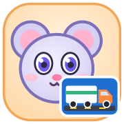

眼動鼠之寶島卡車
iPhone／iPad 版
安裝步驟
- 請用 Safari 開啟本頁，按上方「安裝到這台裝置」。
- 出現「要安裝『眼動卡車』嗎？」時按「安裝」，回到主畫面等圖示下載完成。
- 更新時再按一次安裝即可覆蓋，駕訓班進度與設定會保留。
注意
- 目前為 Ad Hoc 版本，只能安裝在開發者帳號登記過的 iPhone／iPad。
- 其他裝置可以改用 線上版（請橫放手機）。
- 請橫放使用。iPad（iPadOS 18 以上）可以開「設定 › 輔助使用 › 眼動追蹤」，用眼睛看著停留就能選。
- 要在靜音模式下也能出聲，程式已設定為「播放」聲音類別；請把音量調大。
用 iPhone 相機掃描開啟本頁